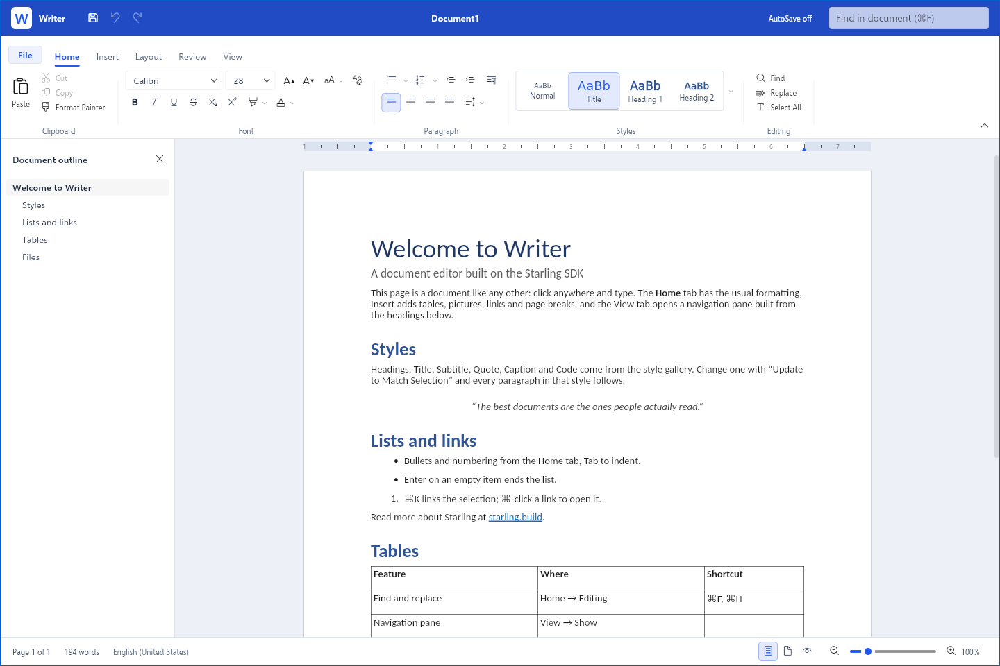

Write with focus
Keep fonts, paragraph formatting, and named styles close at hand in the Home ribbon. Find and replace text as your draft takes shape.
THE OPEN SOURCE OFFICE SUITE
Your next document deserves a fresh start.
An open source office suite, beginning with Writer.

A ribbon that keeps formatting close.
Named styles and an outline to find your way.
A clean page, from first line to final draft.
INTRODUCING WRITER
AVAILABLE NOWA familiar ribbon. A clean page. The tools to turn a quick note into a carefully laid-out document. It’s the first completed app in the Starling Office suite.
Start writingKeep fonts, paragraph formatting, and named styles close at hand in the Home ribbon. Find and replace text as your draft takes shape.
Build structure with headings, lists, pictures, and tables. Move between sections in the document outline, and fine-tune your pages with the ruler, headers, and footers.
Open and save DOCX, RTF, Markdown, and plain text. Export your document as a PDF.
A suite in the making. Only Writer is available so far. More office apps are planned; they aren’t ready yet.
SIX PLATFORMS. ONE AMBITION.
At a desk. On the move. In a browser.
The goal is one open source office suite across desktop, mobile, and web.
Writer is available on the web today. Support for macOS, Windows, Linux, iOS, and Android is on the roadmap.
OPEN SOURCE. FROM THE START.
Starling Office is open source. Read the code, follow its progress, or help shape what comes next.
Built on the Starling SDK. The source is part of the Starling project, under the Apache 2.0 license.
Explore the source Read the license ↗LESS WAITING. MORE WRITING.